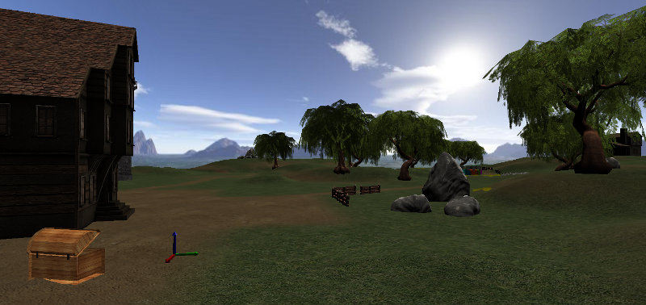
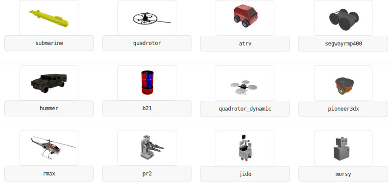

The open-source simulator for academic robotics
MORSE is an generic simulator for academic robotics. It focuses on realistic simulation of small to large environments, indoor or outdoor, with one to over a dozen of autonomous robots.
MORSE provides out of the box a large set of standard sensors (cameras, laser scanner, GPS, odometry,...), actuators (speed controllers, high-level waypoints controllers, generic joint controllers) as well as several robotic platforms (ATRV, generic 4 wheel vehicle, PR2,...). New ones can easily be added.
Besides generic socket-based APIs, MORSE fully integrates with standard robotic middlewares, including ROS and YARP.
Fork us on GitHub: github.com/morse-simulator/morse
...or download the morse-1.1.1.tar.bz2 - 98MB - 06-Nov-2013).
Check the installation notes.
MORSE is mainly supported on Linux and MacOSX. It has been reported to work as well on Windows.
| 07 Mar 2014 | "MORSE for HRI" Open Workshop (right after the HRI'2014 conference) |
| 06 Nov 2013 | MORSE 1.1.1 release (maintenance release) |
| 16 Sep 2013 | MORSE 1.1 release |
| 6-7 Jun 2013 | First Intl MORSE Workshop |
| 2 Apr 2013 | MORSE 1.0.1 release (maintenance release) |
MORSE is actively developed and 100% supported by the academic community, with 15+ labs involved worldwide.
If you have questions or run into issues, contact us on the morse-users@laas.fr
mailing-list.
If you want to discuss development, you can also subscribe to morse-dev@laas.fr.
You can report bug (or feature wishes) on the MORSE issue tracker.